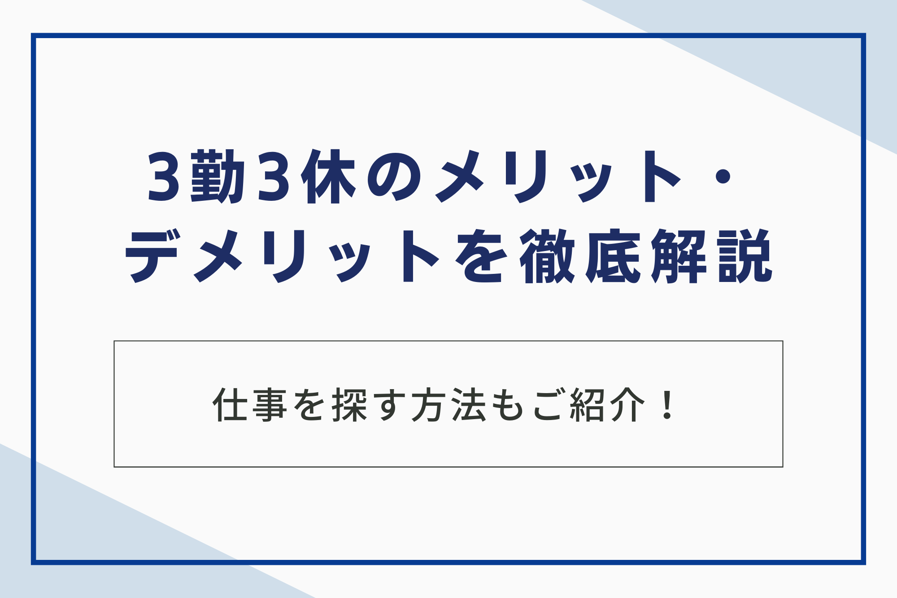

ワークライフバランス重視の方に人気の「3勤3休」。3日働いて3日休むこの働き方は、プライベートの時間をたっぷり確保できる一方、生活リズムの乱れや給与面での不安など、気になる点も多いのではないでしょうか。
そこで本記事では、3勤3休のメリット・デメリットを詳しく解説し、よくある疑問にもお答えします。さらに、3勤3休に向いている人・向いていない人の特徴や、仕事探しの具体的な方法まで解説しています。

3勤3休とは？
3勤3休とは「3日間勤務して3日間休む」という勤務形態です。一般的な土日休みの企業とは異なり、3日間の連続勤務の後、3日間の連続休暇を取得します。このサイクルを繰り返すことで、年間の勤務日数と休日日数がほぼ均等になる形です。
勤務体系は、日勤と夜勤を組み合わせたシフト制が一般的です。日勤と夜勤を交互に行うことで、24時間稼働が必要な工場や医療現場などで多く採用されています。
タイムスケジュール例
タイムスケジュールの一例を以下に示します。
| 曜日 | 勤務時間 |
|---|---|
| 月曜日 | 8:00～20:00（日勤） |
| 火曜日 | 8:00～20:00（日勤） |
| 水曜日 | 8:00～20:00（日勤） |
| 木曜日 | 休み |
| 金曜日 | 休み |
| 土曜日 | 休み |
| 日曜日 | 20:00～8:00（夜勤） |
| 月曜日 | 20:00～8:00（夜勤） |
| 火曜日 | 20:00～8:00（夜勤） |
| 水曜日 | 休み |
| 木曜日 | 休み |
| 金曜日 | 休み |
上記は一例であり、企業や職種によって勤務時間やシフトの組み方は異なります。実働時間についても8時間の場合もあれば12時間の場合もあります。休憩時間も法律で定められた休憩時間と、企業が独自に設けている休憩時間を合わせたものになります。
導入している業界・職種
3勤3休は、労働時間の合計が変わらないように調整した上で、労働日と休日を連続させる勤務形態です。そのため、24時間稼働が必要な業界や、一度に長時間の勤務が必要となる職種で導入されることが多いです。
| 業界 | 職種 |
|---|---|
| 製造業 | 工場作業員、機械オペレーター、製造ライン管理者 |
| 医療・介護 | 看護師、介護士 |
| 警備業 | 警備員 |
| 運輸・物流 | トラック運転手、配送員 |
| 宿泊業 | ホテルスタッフ |
| サービス業 | 飲食店スタッフ |
| インフラ | 電力会社社員、ガス会社社員 |
これらの企業では、24時間体制でインフラの維持管理を行う必要があるため、3勤3休が多く採用されています。

3勤3休のメリットは6つ
3勤3休には、ワークライフバランスの向上や生活リズムの変化など、様々なメリットがあります。以下では、主なメリットを6つご紹介いたします。
1.プライベートの時間が充実する
3勤3休の大きなメリットは、プライベートの時間が充実する点です。「3日勤務→3日休日」のサイクルを繰り返す3勤3休は、1ヶ月の半分が休日となるため、自分のための時間をたっぷり確保できます。一般的な土日休みの仕事と比較した休日日数を以下の表にまとめました。
| 勤務形態 | 月の休日日数 | 年間休日日数 |
|---|---|---|
| 土日休み | 8〜10日 | 約120日 |
| 3勤3休 | 15日 | 約180日 |
3勤3休では、土日休みの仕事と比べて年間約60日も多く休日を取得できることが分かります。これだけの休日があれば、趣味や旅行、家族との団らん、自己研鑽など、様々なことに時間を使うことができます。
2.平日に休みが取れる
平日に休みが取れることは、3勤3休の大きなメリットです。土日休みの職場では、有給休暇を取得しない限り、平日に休みを取ることは難しいでしょう。
一方、3勤3休であれば、3連休のうち一部または全部が平日にあたるケースも少なくありません。平日に休みが取れることで、以下のようなメリットが生まれます。
| メリット | 説明 |
|---|---|
| 役所や病院などの手続きがスムーズ | 平日は空いているため、待ち時間が少なく効率的 |
| 旅行やレジャー費用を抑える | 平日料金は土日祝日よりも割安な場合が多い |
| 混雑を避ける | ショッピングモールや観光地など、快適に過ごせる |
このように、3勤3休で平日に休みが取れることは、日常生活において様々な利点があります。自分の時間を大切にしたい方、費用を抑えたい方、混雑を避けたい方にとって、3勤3休は魅力的な働き方と言えるでしょう。
3.通勤ラッシュを回避できる
3勤3休のメリットの1つとして、通勤ラッシュを回避できる点が挙げられます。多くの人が通勤する時間帯と異なるため、満員電車でのストレスや遅延のリスクを軽減できます。
3勤3休では、日勤の場合、朝7時半や8時など、一般的な会社員よりも早く勤務を開始する場合が多いです。このため、通勤ラッシュの時間帯である8時〜9時を避けて通勤できます。
また、3勤3休は夜勤もあります。夜勤の場合、20時や21時など、帰宅ラッシュの時間帯とは異なるため、快適に通勤できます。
4.旅行や趣味の時間が確保しやすい
3勤3休の大きなメリットとして、旅行や趣味の時間が確保しやすい点が挙げられます。土日休みの一般的な仕事では、まとまった休みを取得するには有給休暇を使う必要があります。
しかし、3勤3休であれば、3連休が勤務体系に組み込まれているため、特別な申請なしで定期的にまとまった休みを取得できます。また、旅行の計画を立てやすくなるだけでなく、費用面でもメリットがあります。
平日に旅行すれば、土日祝日に比べて旅費や宿泊費が抑えられることが多いからです。交通機関や観光地も比較的空いているため、より快適に過ごせるでしょう。
5.副業との両立もしやすい
3勤3休は、勤務日と休日が規則的に繰り返されるため、副業との両立がしやすい働き方です。3日働いて3日休むというサイクルは、副業に充てる時間を十分に確保できるというメリットがあります。自分のペースで副業に取り組むことができ、収入を増やしたり、新たなスキルを磨いたりする機会を得ることができます。
また、まとまった休日を利用して、短期のアルバイトや単発の仕事に取り組むことも可能です。自分のライフスタイルや目的に合わせて、副業を選択できます。
ただし、副業を行う場合は、勤務先の規定を確認し、許可を得ることが必要です。また、本業に支障が出ないよう、副業の時間管理も徹底しましょう。
6.体力的に無理なく働ける場合も
3勤3休は、一見すると長時間労働できつそうに見えますが、体力的に無理なく働ける場合もあります。3勤3休は、基本的に残業が少ない勤務形態です。
これは、3日ごとに勤務シフトが変わるため、自分の担当業務を次のシフトの担当者に引き継ぐ必要があるからです。そのため、自分の勤務時間内に仕事を終わらせるように意識して働くようになり、結果として残業が少なくなります。
毎日長時間労働を続けるよりも、残業が少ない方が体への負担が少ないため、無理なく働き続けられます。
3勤3休のデメリットは5つ
3勤3休にはメリットだけでなく、デメリットも存在します。ワークライフバランスを重視するあまり、仕事や生活に支障が出てしまう可能性もあるため、事前にデメリットについても把握しておきましょう。
1.生活リズムが乱れやすい
3勤3休では、日勤と夜勤を交互に行うケースが多いため、生活リズムの維持が難しくなります。特に夜勤は、体内時計を大きく狂わせる可能性があります。3日間連続の夜勤を終えて休みに入っても、昼間の生活リズムに戻すのが大変です。
せっかくの休みでも、日中に眠気に襲われてしまうかもしれません。逆に、昼型の生活から夜勤に入るときも、リズムの切り替えが難しく、夜勤中に眠気に悩まされる可能性があります。
特に夜勤に慣れていない人が3勤3休を始めると、睡眠不足で体調を崩してしまうケースも少なくありません。夜勤明けの日は、しっかりと睡眠時間を確保することが重要です。
2.長時間労働の負担が大きい
3勤3休の働き方では、1回の勤務時間が長時間に及ぶケースが多くあります。特に、製造業や医療現場など24時間稼働が必要な職場では、12時間勤務やそれ以上の長時間労働となることも珍しくありません。
このような長時間労働は、肉体的にも精神的にも大きな負担となり、健康に悪影響を及ぼす可能性があります。長時間労働の負担を軽減するには、休憩時間や仮眠時間を適切に設けたり、業務の効率化を図ったりするなどの工夫が必要です。
また、労働時間や勤務形態について、企業と従業員がしっかりと話し合い、より働きやすい環境の整備が重要です。
3.交友関係への影響がある
3勤3休は、土日休みではないため友人や家族と予定を合わせづらいという側面があります。
3勤3休の勤務形態では、休日が平日になることが多く、土日休みの友人や家族と予定を合わせるのが難しくなります。また、冠婚葬祭などのイベントも参加しにくいため、人間関係に影響が出る可能性があります。
友人や家族との時間を大切にしたい人にとっては、3勤3休は大きなデメリットとなる可能性があります。3勤3休の働き方を選ぶ際には、事前に友人や家族に相談し、理解を得ることが重要です。
4.キャリアアップが難しい
3勤3休の働き方では、キャリアアップに困難を感じる場面があるかもしれません。これは、いくつかの要因が考えられます。
まず、経験の幅が限定されやすい点が挙げられます。3勤3休制では特定の業務に特化することが多く、幅広い業務経験を積む機会が限られる場合があります。
昇進に必要なスキルや知識の習得に影響を与える可能性があるため、意識的に多様な業務に挑戦する、自己学習で補うなどの努力が必要となるでしょう。
さらに、評価制度との相性が悪い場合があります。評価項目が勤務日数や時間に基づいている場合、3勤3休の従業員は不利になる可能性があります。
また、上司とのコミュニケーションが不足しがちになるため、適切な評価を受けられない可能性も考えられます。勤務時間外でも上司との接点を持ち、業務内容や成果を積極的に共有するといった工夫が必要です。
5.給与への影響がある
給与体系は企業や職種によって大きく異なるため、一概には言えませんが、考慮すべき点として、労働時間の長さと残業の有無が挙げられます。
3勤3休では、1日の労働時間が長くなる傾向があります。これは、3日間の勤務で通常の5日間勤務と同程度の労働時間をこなす必要があるためです。
1回の勤務時間が長いため、時給換算すると割高になる可能性がありますが、総労働時間で見ると、5日間勤務のケースと比べて減少する可能性があります。
また、残業については3勤3休の勤務形態では、基本的に残業が少ない、もしくは発生しない場合が多いです。シフト制できっちり勤務時間が決められているため、残業が発生しにくい環境と言えるでしょう。
3勤3休の給与・年収は？
3勤3休の給与や年収は、職種や雇用形態、勤務時間、経験、年齢、地域、企業規模など様々な要因によって異なります。正社員、派遣社員、アルバイト・パートといった雇用形態ごとの一般的な年収と月収の目安を以下に示します。
職種による違い
3勤3休の働き方は職種によって、業務内容や労働時間、そして給与水準も大きく異なりますので、3勤3休の仕事を探す際は、職種による違いをしっかりと理解しておくことが重要です。
| 職種 | 業務内容 | 給与水準 | 労働環境 |
|---|---|---|---|
| 工場勤務 | 製品製造、機械操作、品質管理など | 時給または月給制 | 交代勤務、夜勤あり |
| 警備員 | 施設警備、巡回、監視など | 時給または月給制 | 交代勤務、夜勤あり |
| 医療・介護 | 患者ケア、生活介助、医療行為の補助など | 時給または月給制 | 交代勤務、夜勤あり |
| トラック運転手 | 貨物輸送 | 出来高制または月給制 | 長距離運転、不規則な勤務時間 |
| ホテルスタッフ | フロント業務、客室清掃、レストランサービスなど | 時給または月給制 | 交代勤務、夜勤あり |
同じ3勤3休の働き方でも、職種によって求められるスキルや経験、そして給与水準が異なるため、自身の希望や適性に合わせて仕事を選ぶようにしましょう。
残業・夜勤手当
3勤3休の働き方では、残業や夜勤が発生するケースがあります。残業代や夜勤手当は、基本給とは別に支給されるため、収入を増やすための重要な要素となります。
| 項目 | 内容 |
|---|---|
| 残業手当 | 法定割増賃金率に基づき支給 |
| 夜勤手当 | 企業・職種により異なるが、時給に一定割合上乗せ |
夜勤手当は、収入を増やす上で重要な役割を果たします。夜勤手当の有無や金額は、求人情報で確認することができます。
年収例
3勤3休のおおよその年収は以下の通りです。
| 雇用形態 | 年収例 |
|---|---|
| 正社員 | 約360万円～500万円 |
| 派遣社員 | 約240万円～360万円 |
| アルバイト・パート | 約150万円～240万円 |
正社員の場合、年収は360万円から500万円程度となることが多いようです。派遣社員の場合は240万円から360万円程度、アルバイトやパートの場合は150万円から240万円程度となる傾向があります。
3勤3休は、休日が多いというメリットがある一方で、勤務日数が少ないため、一般的な勤務形態と比較して年収が低くなる傾向があります。高収入を目指す場合は、残業や夜勤手当の支給の有無や、昇給制度なども考慮して求人を選ぶことが重要です。
3勤3休に向いている人・向いていない人
3勤3休という働き方は、人によって向き不向きがあります。ワークライフバランスを重視したい、プライベートの時間をたっぷり確保したいという方にはメリットが大きい働き方ですが、一方でデメリットも存在します。自分がどちらのタイプなのかをしっかりと見極めることが重要です。
向いている人の特徴
3勤3休の働き方は、プライベートの時間と仕事のバランスを重視する方にとって、大きなメリットがあります。以下のような特徴を持つ方は、3勤3休の働き方が向いていると言えるでしょう。
| 特徴 | 説明 |
|---|---|
| プライベート重視 | 趣味や家族との時間を大切にしたい方 |
| 計画性 | 3連休を有効活用できる方 |
| メリハリ | オンオフを切り替えたい方 |
| 体力 | 長時間労働と休息のバランスを取れる方 |
このように、3勤3休はワークライフバランスを重視する方にとって、魅力的な働き方と言えるでしょう。自分のライフスタイルや価値観に合った働き方かどうか、しっかりと検討することが大切です。
向いていない人の特徴
3勤3休は、一見すると休日が多く魅力的に見えるかもしれません。しかし、この働き方には向き不向きがあります。以下のような特徴に当てはまる方は、3勤3休の働き方が合わず、仕事にストレスを感じてしまう可能性があります。
| 特徴 | 詳細 |
|---|---|
| 土日祝日を休みたい | 友人や家族との予定が合わせにくい |
| 長時間労働に不安がある | 体力的負担が大きい |
| 夜勤が苦手 | 生活リズムの乱れ、体調管理の難しさ |
| 高収入を目指している | 収入が低い傾向がある |
上記の特徴に当てはまる方は、3勤3休以外の働き方を検討することをおすすめします。
3勤3休の仕事を探す4つの方法
3勤3休の仕事は、一般的な求人とは異なる探し方が必要になる場合があります。求人情報を探す際に効果的な方法を4つご紹介します。
1.インターネットの求人サイト
インターネットの求人サイトは、3勤3休の仕事を探す上で最も手軽で効率的な方法の1つです。数多くの求人サイトが存在し、それぞれに特徴があるので、自分に合ったサイトを選ぶことが重要です。
| 求人サイトの種類 | 特徴 |
|---|---|
| 総合型求人サイト | 幅広い職種・業種の求人を掲載 |
| 専門型求人サイト | 特定の業界・職種に特化した求人を掲載 |
| 派遣会社サイト | 派遣の求人を専門に掲載 |
例えば、各求人サイトではキーワード検索で「3勤3休」と入力することで、関連する求人を絞り込むことができます。また、勤務地や職種、給与などの条件を指定して検索することも可能です。
自分に合った求人サイトを選ぶためには、いくつかのサイトを利用してみることをおすすめします。サイトの使いやすさや検索機能なども考慮して、自分に合ったサイトを選びましょう。
2.ハローワーク
全国各地にあるハローワークでは、3勤3休の仕事を含め、様々な求人情報を無料で入手できます。
窓口で相談すれば、希望の条件に合った仕事を紹介してもらえるので、仕事探しの負担を軽減できるでしょう。ハローワークの主なサービス内容は以下の通りです。
| サービス内容 | 説明 |
|---|---|
| 求人情報の提供 | 3勤3休の仕事を含む、様々な求人情報を検索・閲覧できる。 |
| 職業相談 | 経験豊富な職員が、希望の条件や適性などを考慮し、最適な仕事を紹介してくれる。 |
| 職業訓練 | 就職に必要なスキルや知識を習得するための職業訓練情報を提供している。 |
ハローワークは、費用をかけずに仕事を探したい人や、公的機関のサポートを受けたい人におすすめの求人サービスです。
3.知人・友人からの紹介
知人・友人からの紹介は、求人サイトやハローワークにはない非公開の求人情報を得られる可能性があるというメリットがあります。
すでに3勤3休で働いている知人・友人がいれば、仕事内容や職場の雰囲気、メリット・デメリットなどを詳しく聞くことができます。もし、あなたの周りに3勤3休で働いている人がいれば、一度相談してみるのも良いでしょう。
ただし、知人・友人からの紹介の場合、紹介してくれた人の顔を立てるためにも、安易に断ることが難しくなるという側面もあります。また、人間関係が悪化してしまう可能性もゼロではないため、仕事内容や労働条件などをしっかり確認したうえで応募を検討するようにしましょう。
4.有料職業紹介事業者
有料職業紹介事業者は、厚生労働大臣の許可を受けた事業者が、求職者と求人者の間に入って仕事を紹介するサービスです。
有料職業紹介事業のメリットは、専門のコンサルタントが求職者の希望やスキルに合った仕事を紹介してくれる点です。非公開求人の紹介を受けられる可能性もあります。また、企業との交渉や面接対策などのサポートも受けられます。
有料職業紹介事業者は、一般の求人サイトには掲載されていないような、好条件の求人を扱っている場合があります。転職活動に行き詰まっている方や、希望の条件に合う求人がなかなか見つからない方は、利用を検討してみてはいかがでしょうか。⇛ベルジャパンに相談する
3勤3休でよくある3つの質問
3勤3休に関するよくある質問とその回答を通して、より深く3勤3休の働き方の理解を深めましょう。
質問1. 3勤3休はきつい？
3勤3休できついと感じるかどうかは、個人の体力や適応力によって大きく異なります。1日の労働時間が長いため、体力的に負担がかかる場合がある一方、3日間の休みがあることで、しっかりと休息を取ることが可能です。
質問2. 3勤3休の仕事でキャリアアップは可能？
3勤3休の仕事内容や業種、そして個人の努力次第でキャリアアップは可能です。資格取得やスキルアップを目指したり、管理職への昇進を目指したりすることもできます。企業によっては、研修制度や資格取得支援制度が用意されている場合もあります。
質問3. 家族や友人との時間は取れる？
3勤3休の場合、土日休みではないため、家族や友人との時間の調整が必要になります。しかし、3日間の連休があるため、その時間を有効活用することで、家族や友人との時間を確保することは可能です。また、休日が固定ではないため、土日に休みが重なる場合もあります。
まとめ
3勤3休は、プライベートの時間を大切にしたい方にとって魅力的な働き方です。ただし、3勤3休が自分に合っているかどうかは、個人の価値観やライフスタイルによって異なります。メリットとデメリットを比較検討し、自分に合った働き方を選択することが重要です。
なお、株式会社ベルジャパンは、有料職業紹介業のなかでも豊富な実績ときめ細やかなサポート体制を強みとしており、求職者・企業双方から高い評価をいただいております。独自のネットワークを活かして非公開求人を含む多様な案件をご紹介できる点が大きな特長です。
さらに、専任コンサルタントがキャリアやスキル、ライフスタイルなどを詳しくヒアリングすることで、一人ひとりに最適化されたサポートを実現しています。⇛ベルジャパンに相談する